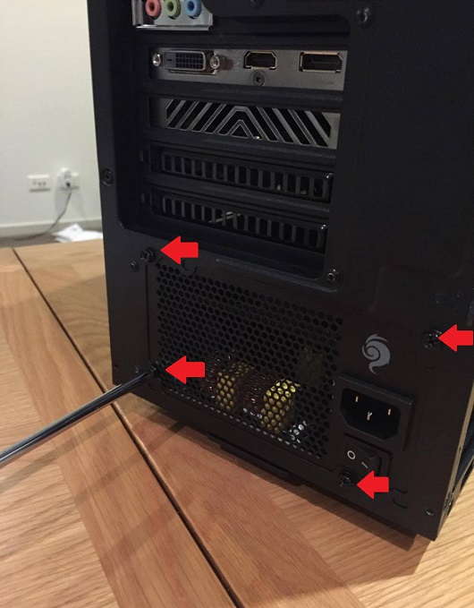

Each component of the computer requires power to be drawn from the power supply to function properly, it does this by turning the AC power from your home socket to DC power that the computer requires. When looking at what voltage supply you need, you will have all the parts inside your pc in mind as different spec'd parts will require different amounts of power to run. When you are looking at the supplys you will find many different ratings, you will mostly find on every supply the 80 plus rating. This means that the supplys have been tested and passed off for being at least 80% efficent under different loads. Different 80 plus ratings include;
In the back of the pc there will be a big space at the bottom for your power supply to go as you will need to add the power cables and feed them into each part of the pc that is needed. In the box of the supply that you have bought there will be 4-5 screws that holds the supply in place with the main switch for the back of the pc on display for you to turn off the power when needed.
